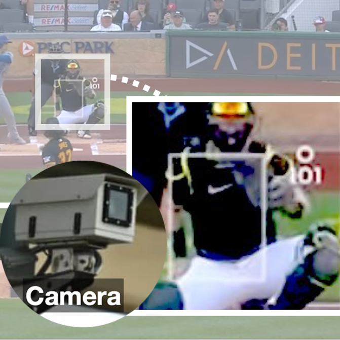

|

|
Million Eyes on the "Robot Ump": The Case for Studying Sports in
HRI Through Baseball
Waki Kamino, Andrea Wang, Dhruv Agarwal, Sil Hamilton, Eun Jeong Kang,
Jieun Kim, Keigo Kusumegi, Pegah Moradi, Daniel Mwesigwa, Yan Tao,
I-Ting Tsai, Ethan Yang, Shengqi Zhu, Shu-Jung Han,
Chi-Jung Lee, Michael Joseph Sack, Tianhong Catherine Yu, Weslie Khoo,
Andy Elliot Ricci, Yoyo Tsung-Yu Hou, Boyoung Kim, Dr. Selma Sabanovic,
David Crandall, Karen Levy, Malte F Jung
HRI, 2025
late-breaking report |
bibtex
Using robot umpires in baseball as a primary example, we explore various emerging themes from interdisciplinary perspectives, including the technical challenges of computer vision and graphics.
|